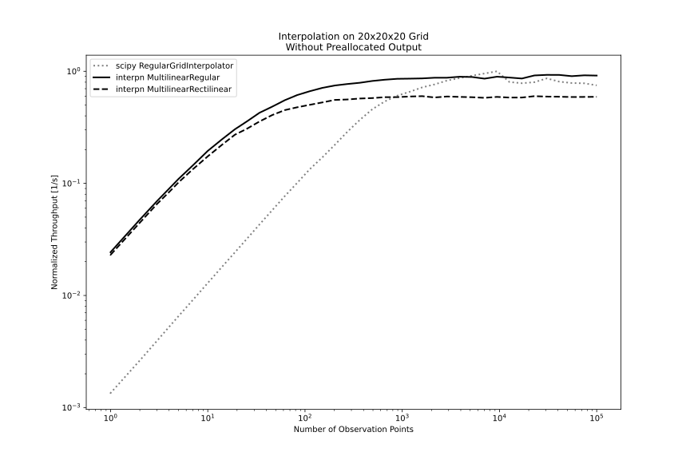
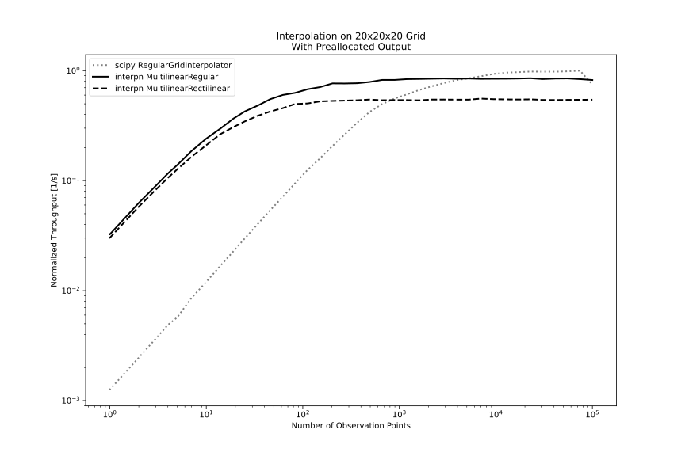

2023-11-24: Building a Hypercube Interpolator
Edited on 2023-11-30 to add more implementation details.
Results
The TL;DR is that we can achieve a 10-150x speedup over the reference (FITPACK via scipy) when interpolating at a small number of observation points while eliminating allocation (!) and staying close to perf parity for larger inputs.
This is particularly relevant to engineering optimization, where differentiation workloads for interpolators typically rely on forward differences that make many function calls with a small number of inputs.
Similarly, in electrical, fluid, or thermal simulation, sim times are often bound to overhead from making many calls for a small number of outputs from real-material property data tables through an interface such as CoolProp, and this is compounded for optimization through such simulations.
Finally, some perf charts for a reference case on fair ground: interpolation at (pre-selected) random locations inside a 20x20x20 3D grid.
Without preallocation of outputs for the methods described here:

Unlike the scipy bindings, the methods presented here can evaluate into preallocated output storage.
With preallocation of outputs for the methods described here:

Hold on - did they get worse with preallocation? No! This is an artifact of the benchmarking process, but one that accentuates the value of eliminating allocation. The benchmarks are interleaved (method 1 x100, method 2 x100, method 3 x100, ...), so they see some performance cross-talk through allocation.
Eliminating allocation from the interpn methods significantly improves scipy's performance
in neighboring benchmarks, despite both methods using an un-instrumented
warmup and manually calling python's garbage collector between benchmarks. The
scipy method is still allocating, it just has less overhead - so improving interpn's
memory performance by evaluating into a preallocated array helps scipy even more than it
helps interpn. Quite an on-the-nose example of the value of avoiding allocation in application-level code!
Rationale
First, a discussion of the state of the art, and why one might bother digging into a field that's surely been a solved problem for some time.
FITPACK exists
As far as I'm aware, the last and only meaningful work done on general and reusable interpolation methods for scientific computing was Dierckx's excellent 1994 textbook and the accompanying Fortran library, FITPACK.
The Dierckx FITPACK library has since been absorbed into netlib alongside BLAS and LAPACK, and remains under a homebrewed license.
As such, it is usually integrated into other ecosystems as a user-side dependency, often in addition to all of the dependencies required to compile Fortran and produce bindings in the target language.
Notably, the scipy project includes bindings to many FITPACK routines. In Rust, the splinify library provides bindings to select splining routines, although I have not been able to get through the game of dynamic dependency whackamole to get it to build successfully.
FITPACK supports many pieces of functionality that are out of scope here - in particular, Dierckx gives a thorough and performant treatment to fitting the interpolator coefficients, smoothing, and surface identification, often by finding fairly inspired phrasings of fitting problems as quadratic programs regardless of the polynomial order of the curvefits.
This is not FITPACK
The goal of this project is not to replicate all of FITPACK's functionality. In fact, curve fitting in its entirety is out of scope. Instead, this project will focus on the interpolation tasks common in scientific computing, which (possibly after some uncertainty-weighted fitting) typically hold a hard requirement on the interpolator reproducing the anchor values exactly.
Unlike fitting and interpolation for graphics, the correctness of the result is the highest priority, followed by performance and ergonomics in close succession. Smoothing or other manipulation of the data are anti-goals, as they directly compromise correctness.
This is something more specific
Good quality scientific methods for curvefitting are a larger topic than interpolation, and while there are surely patterns in the process, those methods also tend to be fairly bespoke to the problem under examination.
Functionality goals
- Evaluation of values (and later, gradient and hessian entries) for exact interpolators in Rust
- Self-contained (evaluate using only grid locations and data values)
- Avoid the need for another program or library to provide spline knots, etc
- Clear and permissive licensing
- Convenient, structured, and version-controlled build process
- Convenient inter-languge interop & first-class support for bindings
- Compatibility with embedded and high-performance systems (no allocation)
- Smooth transition from interpolation to extrapolation (to support solvers)
- Separation of bounds error checking from interpolation/extrapolation (to support solvers)
Tooling
| Rust | Python | |
|---|---|---|
| Repo | interpn | interpnpy |
| Docs | Docs.rs | readthedocs w/ mkdocs |
| Benchmark | Criterion | timeit w/ warmup |
| Lint | rustfmt & clippy | ruff & pyright |
| Test | cargo test | pytest & mktestdocs |
| Release | release-plz & cargo-semver-checks | maturin & PyO3 |
Implementation: selecting a method
First, there are three approaches to interpolation on a regular or rectilinear grid that I've come across, and I had to choose one.
- Recursive (like FITPACK)
- Convolution (as used in GPU libraries)
- Geometric (no implementations I'm aware of)
Recursive method?
The recursive method is fairly intuitive in addition to being fairly performant, and making no compromise on correctness or generality. The idea is to interpolate on one axis at a time, projecting the grid cell into lower dimensions until finally arriving at a point.

It's easy enough to imagine how this recursive method would generalize to extrapolation or to higher dimensions - do nothing, and it will handle those cases just fine.
However, the amount of data that needs to be actualized at each step of the recursion
varies with the number of dimensions - O(2^(ndims - 1)) per observation point,
plus or minus a factor of 2 depending on how hard one would like to optimize it.
Whether or not this is a lot depends on circumstance - but it'd sure be neat if we could find a way to use a constant amount of storage, or at least an amount that scales more favorably with the number of dimensions.
Convolutional method?
The convolutional method doesn't make much of a diagram, but it's exceptionally fast on GPU for image scaling, and generalizes to higher polynomials. Unfortunately, it doesn't handle points near the edge of the grid very well, nor extrapolation - in fact, its performance gains are directly the product of sacrificing both correctness and generality.
You also have to develop the footprint coefficients specifically for every dimensionality, and while I'm sure there's some series formulation of it similar to how finite difference coefficients are tabulated, I have no desire to develop that formulation.
It's excellent for resampling images, and there's a huge market for that, but it's not quite what's needed for scientific computing.
Geometric method
The geometric method, as far as I can tell, only exists as a blurb on wikipedia intended to give an intuitive explanation of the behavior of the better methods.
The idea is that each grid cell can be partitioned into sub-cells characterized by the vector from the observation point to each grid cell vertex. This partitioning fully fills the grid cell. A multilinear interpolation can be obtained as the sum of the values at each grid cell multiplied by the area of the opposing sub-cell.

It's intended as an educational aid, but as an algorithm, it has some interesting properties that merit a harder look.
First, the memory scaling is excellent: only O(ndims) stack usage is ever
needed simultaneously per observation point.
Second, it is better-positioned to avoid floating point error due to aggregating the
contribution from each of the grid cell vertices simultaneously (a sum of products)
rather than the recursive method's long chain of alternating subtractions, divisions,
and multiplications. In fact, division is eliminated from intermediate steps entirely,
and the longest chain of error-prone add or sub operations is of a constant length 2
instead of length ndims.
The longest chain of multiplications is ndims, but only one division is required per
observation point regardless of dimensionality, and multiplications are a relatively
minor contributor to float error compared to addition and subtraction.
Third, it may actually be more correct, in a sense, than the recursive method, because under extrapolation in corner regions, it will not extrapolate the derivatives on each axis the way that the recursive method does.
Finding the grid cell
Regardless of the choice of method, we'll always need to know what grid cell the observation point lands in, in order to know which tabulated values contribute to the interpolated result.
Regular grid
For regular grids where all the grid locations are evenly spaced, this is logically easy if we're inside the grid:
It gets a little more complicated when we consider that the point may be outside the grid, in which case we need to snap to the grid:
But wait - we can't actually represent a value below zero as a usize, so we need a stop over as a signed integer to represent extrapolation below the grid without integer overflow:
We can't acturally run that yet, though, because we can't just
as isize and as usize a generic float type.
Converting a float to an integer also isn't exactly a clear and concise operation - it can be done sketchily with a handful of bit shift mask operations, but to produce a correct result in general, and to avoid harmful edge cases, is not always possible, and we may have to generate an error here to avoid returning an incorrect result.
Our observation point x is a generic T: Float using num_traits
to generalize over f32 and f64. In order to also capture safe
typecasting, we can add another trait from num_traits, NumCast.
let floc = (x - grid_start) / grid_step); // Float location
let iloc = <isize as NumCast>::from(floc).unwrap(); // Signed integer location
let uloc = iloc.min(grid_size - 1).max(0) as usize; // Usable unsigned index
That got a little weird, and there's a conspicuous unwrap() there:
in fact, this is expected, because if we ever try to convert, say, a NaN
value, or a value larger than isize::MAX, we'll have a real
un-handleable error that needs to propagate to prevent the method
from returning a genuinely incorrect result.
Rectilinear grid
For a rectilinear grid, we have an uneven spacing of grid cells on each axis. This means that in general, we're not sure exactly where a given observation point lands in the grid until we check it against the grid values.
If we don't know anything about the location of the observation point other than that it's more likely to be inside the grid than outside, then a bisection search is the theoretical optimum for finding the grid index.
The Rust core library implements an excellent binary search, which we can use via the
slice::partition_point() interface.
In practice, the simplicity gets engineered out of it to handle extrapolation in a similar way to what happened with the regular grid method, but that's the core of the idea.
Bagging the memory scaling
The improved memory scaling of the geometric method only holds if we can visit
the vertices of a given grid cell
one by one, accumulating the contribution of each one before moving to the next.
The value accumulated from each vertex doesn't depend on the others, so it works out
in terms of the flow of information - but there are 2^ndims vertices to visit.
The usual solution for visiting all of them would be something like itertools'
multi_cartesian_product - but this requires the standard library, and in order to
actually access all of the indices at once, we'd still end up actualizing all 2^ndims
vertices at once, breaking the O(ndims) memory scaling.
Starting with the index of the lower corner of the grid cell, we can represent
each vertex in terms of an array like [bool; ndims] where each entry is
the index offset from that lower corner to the current vertex.
Ultimately, we need to get one row at a time out of a table like this:
| dim | 2 | 1 | 0 |
|---|---|---|---|
| offset | 0 | 0 | 0 |
| 0 | 0 | 1 | |
| 0 | 1 | 0 | |
| 0 | 1 | 1 | |
| 1 | 0 | 0 | |
| 1 | 0 | 1 | |
| 1 | 1 | 0 | |
| 1 | 1 | 1 |
If we don't mind some integer operations, we can actually formulate this
table one at a time by keeping a running record of the index offset, and
flipping the index of each dimension one at a time every 2^dim indices:
// In a loop to examine the vertices one at a time...
let mut ioffs = [bool; ndims];
let nverts = 2.powi(ndims);
for i in 0..nverts {
// Every 2^nth vertex, flip which side of the cube we are examining
// in the nth dimension.
//
// Because i % 2^n has double the period for each sequential n,
// and their phase is only aligned once every 2^n for the largest
// n in the set, this is guaranteed to produce a path that visits
// each vertex exactly once.
for j in 0..ndims {
let flip = i % 2_usize.pow(j as u32) == 0;
if flip {
ioffs[j] = !ioffs[j];
}
}
// ... then accumulate the contribution of the vertex
}
So with that, we have no-std and limited-memory version of multi_cartesian_product specialized to this usage, and we only need to store a tiny number of values to run it.
The cost comes in compute, but ultimately, integer mod with a base that is a power of 2 is not expensive. In any case, this compute has to happen somewhere, and it may as well be here.
Doing this mod operation with manually-assembled bit-shift operations does not improve performance. I haven't looked too hard at the assembly, but I'd bet that's because the compiler knows what's up.
Reinventing the wheel (indexing into an array)
Ok, well, now that we have the vertex, we're still not quite ready to start accumulating the contribution. First, we need to get the grid value associated with that vertex.
Without any external dependencies on array libraries, that means writing our own array indexing.
Assuming we've got a contiguous input array that was formulated from
C-style interleaved inputs from an N x M coordinate grid,
the values are ordered like this:
In order to know where to find each row, column, or whatever you call the flakes of an array in the higher dimensions, we need to skip the cumulative product of the sizes of all the higher dimensions in order to find the next flake of the lower dimension.
// Sometime before the loop, accumulate the cumulative product
// of sizes of each dimension of the grid
// Populate cumulative product of higher dimensions for indexing.
//
// Each entry is the cumulative product of the size of dimensions
// higher than this one, which is the stride between blocks
// relating to a given index along each dimension.
let mut dimprod = [1_usise; ndims];
let mut acc = 1;
(0..ndims).for_each(|i| {
dimprod[ndims - i - 1] = acc;
acc *= self.dims[ndims - i - 1];
}); // This doesn't quite work as a .fold()
for i in 0..nverts {
// ... sometime later in the loop where we did some shenanigans
// with a mod operation to find the `ioffs` entries
// Accumulate the index into the value array,
// saturating to the bound if the resulting index would be outside.
let mut k = 0;
for j in 0..ndims {
k += dimprod[j]
* (origin[j] + ioffs[j] as usize).min(self.dims[j].saturating_sub(1));
}
// ... then, maybe, finally, accumulate the contribution of the vertex
}
That expanded a bit from concept to execution, but it's also one of the places
where Rust's particulars shine: the saturating_{op} functions are really excellent for doing safe indexing, and while they may represent extra
operations in some places, usually wherever there's a saturating_{op},
there's a slice indexing bounds check that can be optimized out.
And since we're examining extrapolation as well as interpolation, these indexing edge cases aren't academic - they're the product.
Doing interpolation with the geometric method is easy
let mut interped = T::zero(); // The accumulated interpolated value
for i in 0..nverts {
// ... sometime later in the loop where we did some shenanigans
// with a mod operation to find the `ioffs` entries
// and after we hand-roll array indexing
// Get the value at this vertex
let v = vals[k];
// Find the vector from the opposite vertex to the observation point
let mut dxs = [T::zero(); ndims];
for j in 0..ndims {
// Populate dxs[j] with the (unsigned) vector
}
// Accumulate contribution from this vertex
if !extrapolating {
// Interpolating is easy! Just do a cumulative product
// to get the sub-cell volume for this vertex which
// tells us its weight in the weighted average
let vol = dxs.iter().fold(T::one(), |acc, x| acc * *x);
interped = interped + v * vol;
}
else {
// Extrapolating
// ...
}
}
// Return the interpolated total, dividing through by the total
// cell volume just one time at the end
interped / cell_vol
Extending the geometric method to extrapolation
The geometric method sounds good on paper, but let's see how it holds up in a practical implementation. In particular, we need it to work well (1) in extrapolation and (2) in higher dimensions.
I filled up a notebook with doodles and algebra figuring this out, but I'll spare us both the excessive summations and keep the abuses of notation between me and the graph paper. Visual depictions of computational geometry fare better than obfuscatory equation soup, anyway.
Extrapolation without adjustment
Let's try extrapolating in 2D.

Well, that didn't work - at least not without some extra handling.
Extrapolation by extending the grid?
One option would be to extend the grid cell to include the full area including the observation point.
On inspection, this is the same as the recursive method - we would need to treat each dimension in extrapolation one at a time, actualize the new grid, then finish the interpolation (which, in this case, would just be taking one corner of the grid as the final value).
That's not great. For one thing, it would have a worse memory scaling, and I'd be implementing both methods instead of just one. For another, it produces a dubious result when the grid data describes a nonlinear function: the extrapolation would twist the grid cell like a potato chip, effectively extrapolating the derivatives as well as the value and producing a kind of quadratic extrapolation instead of a linear one.
There's a better way, but it involves chewing a bit of glass.
Extrapolation by a pile of extra logic
I don't have a good name for this process. It's a turducken of constructive geometry and plain algebra - basically reverse-engineering the failure of the method to naturally extend to extrapolation, and eliminating those failures.
We clearly need to zero-out the contribution from vertex A as we move into
extrapolation to produce the same result we would get by taking the finite difference
from B to C and from D to C, and extrapolating linearly on each axis -
the hand-written extrapolation wouldn't include a contribution from from A at all.
We also need to negate the contribution from the grid points on the interior of the grid - the areas that split the grid cell evenly before are now overlapping, and the result we need is no longer any weighted average of the grid values. But, imagining that we were in 3D, we could be still need to do some grid-cell-based weighted-averaging, because we could be extrapolating on two axes (as in the 2D example) while interpolating on a third axis.
Once we've zeroed-out the contribution from the inner point A and negated
the contributions from points B and D, we have another problem.
All three non-zeroed points B, C, and D share an overlapping region
which has an area that scales not linearly but quadratically with the position
of the observation point. This can't be part of the final interpolated result,
but it's easy enough to find the area of the nonlinear region and remove it.
This removal process is, conveniently, still an O(1) process for each
vertex of the grid cell, so while it makes extrapolation slightly slower,
it doesn't change the overall perf scaling.

Extending the geometric method to higher dimensions
Well, that's settled, right? It's not, but you get to find out the way I found out - after slogging through a 3D implementation.
Let's see how it looks in 3D, interpolating to points on the interior of the grid.
To start, we'll look at a point that's on one face of the grid cell, so that we can see what's going on without a forest of lines getting in the way, and leaving two of the sub-cells un-shaded to unclutter the diagram.

So far, so good. With a bit of staring and thinking, it's clear that this produces the same behavior as the 2D version as the observation point moves around the face of the cube.
As it moves to the interior of the cube, things get a little more detailed.

Here I'm only shading two sub-cells again to keep the clutter down, but it's clear to see that the partitioning still fills the space, and the volume of each sub-cell scales linearly with the observation point's position on each axis.
Anyway, it's all working well so far! Let's see how the fixes from the 2D method hold up under extrapolation in a side region.

Looks good! Only two of the regions are shaded again, but from this, we can already tell that negating the contribution from the points on the interior of the grid will have the intended effect, same as in 2D.
Next, a look at the corner region, where we can exercise the fixes that zero-out the contribution from the entirely-inside vertex and trim the nonlinear region.
A problem in higher dimensions

Uh-oh. Only shading the nonlinear region(s) this time, because that's the catch: there isn't just one kind of nonlinear region, and the fix based on the 2D method only capture the cubic region, not the quadratic regions.
A solution in higher dimensions
It turns out, we can handle this, too - but not by enumerating all of the kinds of nonlinear region in higher dimensions. Or at least, I don't know how to do that. Instead, we can observe that all of the linear regions are of the same form, the rectangular prisms projecting from each face of the cube. We can also make a real claim that this will be the case in all higher dimensions, because any region that grows in a direction not aligned with the coordinate axes will have a nonlinear volume scaling, so all the linear regions must be aligned with the coordinate axes.
So, rather than removing all the bad regions, which only works well in 2D, we
can cycle through all the axes and take all the good regions that are
projected from the n-cube's faces. This works, including in higher dimensions,
and produces a true linear extrapolation outside the grid. However, it does
cost in performance: for the corner regions where this culling process is
required, the cost of evaluating an observation point scales like O(2^ndim + ndim^2)
instead of just O(2^ndim).
For practical purposes, this is not too bad, but it is noticeable - about a factor of 2-4 reduction in throughput when extrapolating in corner regions, which also breaks timing guarantees (not ideal for, say, embedded control systems).
With that, we have a method that generalizes to arbitrary dimensions, or at least to the 10 dimensions I've tested it in, under both interpolation and extrapolation in every type of region. And it can do this with no allocation (except, possibly, for somewhere to put the output) and with stack usage that scales linearly in the number of dimensions.
Next Steps
I am happy to report that due to the efforts of the cargo-semver-checks, release-plz, maturin, and PyO3 developers, I can gloss over the relatively painless process of releasing the rust library on crates.io, generating python bindings, and releasing the python bindings on PyPI.
Instead of agonizing over tooling and processes, I can focus on extending the existing functionality. Next on the list, in any particular order that I find inspiration, are:
- Proper multi-cubic (Hermite spline) interpolation
- Vectorized alternatives to the multilinear methods here (for the high-throughput and timing-sensitive regimes)
- Triangular and tetrahedral mesh interpolation
- Perf optimizations of the python bindings for the existing multilinear interpolators